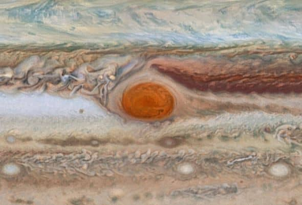
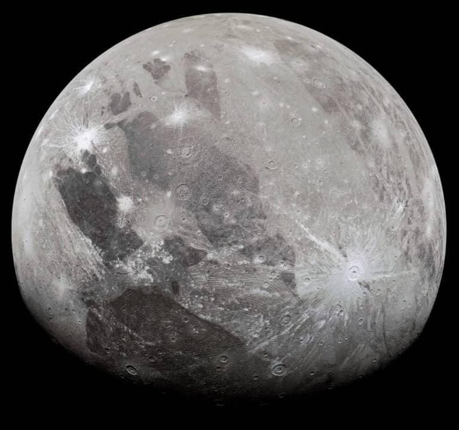

(2024/03/13)
木星の概要
太陽系第五惑星です。太陽系で最も大きい惑星です。
直径が14万3000kmです。67つの衛星を持っています。
自転周期は10時間で公転周期は12年です。
地球とは違いガスで構成されるガス惑星です。
火星の構造
基本構造
中心から岩石と氷の核、液体の金属水素、液体の水素、液体水素とヘリウム、気体の水素とヘリウムの大気で構成されたガス惑星です。
ガス惑星のため降り立つための地面というものがありません。
大赤斑
太陽系最大級の嵐です。

サイズは横幅2万4000km、縦幅は1万3000km(※2008年時点)あります。反時計回りに6日で1周しています。
激しい嵐によって生じた音波が上空を加熱していることで、大赤斑上空では1300℃にもなります。
それ以外の部分の平均気温は-121℃です。
しかし、現在ではサイズが年間930km縮小してきています。
楕円型から真円へと形状が変化してきています。
21世紀中頃には消滅すると考えられています。
木星のオーロラ
木星には地球と同じように磁場があるためオーロラが発生します。
さらに地球よりも大きい規模で発生しています。
しかし、地球より遠い木星でなぜオーロラが発生するのでしょうか。
太陽風説
オーロラが発生するにはイオンが光速に近い速度まで早くならなければなりません。
その速度の原因は太陽風に押されて加速しているという説。
地球も同じ方法でオーロラが発生しています。
自転による供給説
木星の高速自転と木星自身がもつ磁場及び木星の衛星イオから供給されるプラズマによって加速されるというものです。
調査の結果太陽風の強さと木星のオーロラの強さが強くかかわっているということが確認されたので、
イオンが太陽風の影響で加速されて発生している可能性が高いです。
木星の様々な衛星
木星は引力が強いため多くの小惑星や彗星を引き寄せやすく、その為多くの衛星があるとされています。
イオ
月と同じぐらいのサイズです。内部で火山活動が観測されています。
表面が岩石や硫黄で構成されているので、黄色く見えます。
火山活動が起こる理由として、木星の強い重力によって、内部で圧力の差が生じて
それが摩擦熱となって高温になる事が挙げられます。
エウロパ
表面が氷で覆われた衛星で、表面に見える筋は、氷が解けた後という説があります。
内部に木星の重力による熱が発生して、高温の水が噴き出る熱水噴出孔があり、
氷の層の下には厚さ100kmにも及ぶ海水があると考えられています。
ガニメデ
直径が5260kmで水星よりも大きいです。
明るい部分は比較的新しい地層で、暗い部分は古い地層になっていて鉱物が多く存在しています。
この衛星も地下に水があるという説があります。
カリスト
直径が4820kmで水星と同じ程度の大きさです。
この衛星には核がありません。岩石と氷の混ざったものが内部にあります。
地殻活動や火山活動の痕跡はありません。
これらの衛星をまとめて木星の四大衛星またはガリレオ衛星と呼ばれています。
宇宙豆知識(木星に巨大な黒い円？)
2019年9月11日に人工衛星ジュノーから左の画像が送られてきました。
この巨大な円は直径が3540kmもあります。
この黒い円は衛星イオが太陽光を防いだことで、できた影です。
地球の月による日食と同じものです。